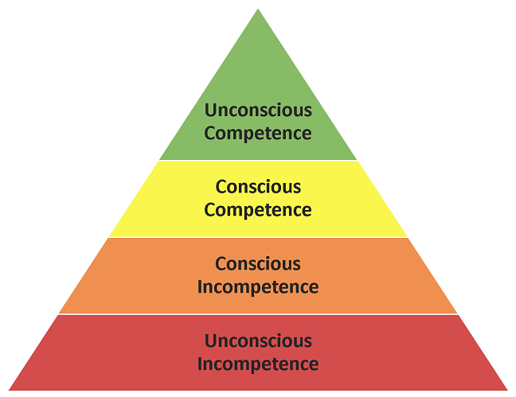

Characteristics of Innovative Leaders
A comprehensive study on leadership intelligence, foundational HBR traits, objective evaluation, and self-assessment for future educators.
Welcome to Module 2
This module is not about memorizing static definitions. It is a personal guide to help each of us assess our current strengths, recognize leadership capabilities, and address areas for deliberate growth.
Examine the 8 key attributes of innovative leaders based on HBR research indicators.
Evaluate personal leadership strengths, competencies, and developmental areas.
Synthesize practical lessons and apply them to future classroom leadership.
The Importance of Assessing Leadership
- 1 Organizations universally demand innovative teams and creative leaders.
- 2 Yet when asked what makes them innovative, leaders answer: "I don't know" or "I haven't given it much thought."
- 3 High performers are rarely adept at explaining the specific mechanisms behind their own success.
If even seasoned leaders cannot instinctively articulate their habits, we cannot leave leadership to chance. We must deliberately study, measure, and develop these qualities.

The 8 Traits of Innovative Leaders
Research published by HBR identified eight core characteristics consistently exhibited by the most innovative leaders:
Display Excellent Strategic Vision
Innovative leaders describe the future with vivid clarity. They don't micromanage every operational step — they focus on setting the North Star.
Have a Strong Customer/People Focus
- 1 Ongoing Relationships: Continually asking what stakeholders need, feel, and experience.
- 2 Empathy Before Conclusions: Listening first to uncover root causes before making administrative judgments.
- 3 Classroom Context: Innovative teachers seek to understand a student's personal circumstances before evaluating performance.
Create a Climate of Reciprocal Trust
Innovation inherently involves risk. If team members fear punishment for mistakes, experimentation ceases entirely.
- ↔ "Reciprocal" Means Mutual: A two-way street — the leader trusts the team's initiative, and the team trusts the leader's protection.
- 🛡 Covering Their Backs: Leaders shield their members rather than throwing them under the bus when errors happen.
- ✦ The Standard: "People are never penalized for making a genuine mistake."
Magnify Upward Communication
Innovative leaders believe the most inventive ideas emerge from grassroots levels — from frontline personnel and students directly doing the work.
Projecting an approachable spirit that welcomes open input.
Dispelling gloomy atmospheres that silence quiet contributors.
Are Persuasive (Passion Over Power)
Persuasion is not manipulation or commanding authority. In innovative leadership, it is driven by contagious enthusiasm:
Excel at Setting Stretch Goals
- 1 Not Just "Overworking": A stretch goal is not demanding 20% more overtime hours on existing routines.
- 2 Forces Novel Approaches: The target is high enough that routine habits fail — compelling the team to invent new systems.
- 3 Classroom Example: Instead of studying just to pass, creating a project so good the faculty adopts it as an exemplar.
Are Candid in Their Communication
"Candid" means being open, honest, and straightforward — speaking the truth without hiding behind sugarcoated words.
- ✦ Clear Standing: Subordinates always know where they stand — no guesswork or hidden agendas.
- ✦ Direct Feedback as Care: Honest critiques are the fastest catalyst for personal and professional growth.
- ✦ Long-Term Trust: People deeply respect leaders who provide direct truth over hollow compliments.
Inspire and Motivate Through Action
- 1 Purpose Fuels Drive: Innovation requires deep motivation, rooted in a strong sense of significance in one's work.
- 2 Hands-On Commitment: Leaders don't just lecture about innovation — they roll up their sleeves and lead the charge.
- 3 Inspirational Contagion: When teams witness their leader's active dedication, their own commitment is ignited.
The 8 Traits at a Glance
| No. | Trait | Keyword | Core Principle |
|---|---|---|---|
| 01 | 🔭 Strategic Vision | VISION | Articulate the destination clearly; let the team build the pathway. |
| 02 | 👥 People Focus | FOCUS | Continually uncover stakeholder needs and empathize with students. |
| 03 | 🛡️ Reciprocal Trust | TRUST | Two-way safety net; never penalize genuine errors. |
| 04 | ⬆️ Upward Communication | UPWARD | Encourage inventive solutions to bubble up from frontline staff. |
| 05 | 🎤 Persuasiveness | PERSUASIVE | Influence through zeal and conviction, never coercion. |
| 06 | 🏔️ Stretch Goals | GOALS | Set ambitious targets that demand novel methods. |
| 07 | 💬 Candid Communication | CANDID | Deliver direct truth so everyone knows exactly where they stand. |
| 08 | 🚀 Inspire Through Action | ACTION | Lead with purpose by modeling dedication in practice. |
What Is Leadership Assessment?
It objectively examines competencies (skills), readiness, and inadequacies (gaps) from an external standard.
- 1 Selection: Matching right leaders to distinct organizational demands.
- 2 Placement: Deploying strengths where they create maximum impact.
- 3 Development: Formulating targeted coaching to overcome gaps.
The Importance of Leadership Assessment
Assessment replaces subjective guesswork with a reliable feedback mechanism.
- ✦ "Latent" Means Hidden: Reveals unapplied talents an individual may not realize they have.
- ✦ Holistic Value: Enhances capacities applicable across school, community, and career.
- ✦ Balanced Growth: Builds on strengths while addressing vulnerable blind spots.
Two Key Benefits of Leadership Assessment
- 🧭 Provides an unbiased picture of capabilities across any career stage.
- 🎯 Identifies where you want to go and builds the roadmap on how to get there.
- 📚 Pinpoints needed certifications, training, and real-world leadership experiences.
- 🪞 Evaluates personality habits essential for managing teams respectfully.
- 🤝 Strengthens interpersonal competence in diverse educational settings.
- 🛠️ Enables coordinated development — fixing specific gaps instead of guessing.
Self-Assessment & Remedial Measures
"Remedial measures" are proactive corrective actions leaders take to actively reinforce strengths and overcome deficiencies.
- 📈 Monitor Personal Progress: Tracking growth over time keeps leaders self-accountable.
- 🗺️ Futuristic Development: Preparing today for future leadership responsibilities.
5 Advantages of Self-Assessment
Tracks milestones like a fitness tracker for leadership, energizing continuous progress.
Delivers clear data on whether targeted leadership capacities have actually improved.
Provides an honest accounting of strengths and vulnerable blind spots.
"Hones" means to sharpen — refining self-awareness directly elevates your ability to inspire others.
Translates aspirations into concrete benchmarks for superior performance.
Henry Sy Sr. (1924–2019)
Henry Sy’s life is a masterclass in applying the exact traits of innovative leaders: resilience through crisis, bold strategic vision, and deep dedication to service.
Case Study: Henry Sy Sr. (3 Pillars)
- ✦ Worked since age 12 helping family survive.
- ✦ WWII Shrapnel Wound: Injured in the leg by bomb debris; rushed to safety on a wooden kariton (pushcart) by a friend.
- ✦ Opened first store in 1972 — 2 months after Martial Law.
- ✦ Persevered through 1980s debt moratorium, hyper-inflation, and unrest.
- ✦ Pioneered the 1st air-conditioned shoe store in a fashionable format.
- ✦ Constructed landmark shopping centers, including SM Mall of Asia.
- ✦ Diversified into supermarkets, appliances, banking (BDO), and real estate.
- ✦ Funded thousands of college scholarships for underprivileged youth.
- ✦ Donated public school buildings, classrooms, and libraries.
- ✦ Promoted environmental eco-bags and assisted disaster victims.
Key Takeaways: Module 2 Summary
Vision, people focus, trust, upward communication, persuasiveness, stretch goals, candor, and action form the bedrock of innovation.
Evaluates competencies and gaps from an external standard to guide selection, placement, and development.
Everyone possesses latent leadership attributes; assessment illuminates blind spots to chart a deliberate roadmap.
Continuous self-evaluation motivates leaders, delivers feedback, and fuels proactive remedial development.
Henry Sy proves that willpower, customer-centric innovation, and moral responsibility translate directly into historical success.
Innovative leadership intelligence is not an innate gift — it is a deliberate discipline developed through continuous practice.
Remember: You Can Be a Leader!
Leadership is not a title you reach and stop. It is a lifelong, continuous journey of self-awareness, empathy, and deliberate improvement.
Thank You for Listening!
We hope this presentation inspired you to reflect, assess your capacities, and step boldly into your leadership journey.